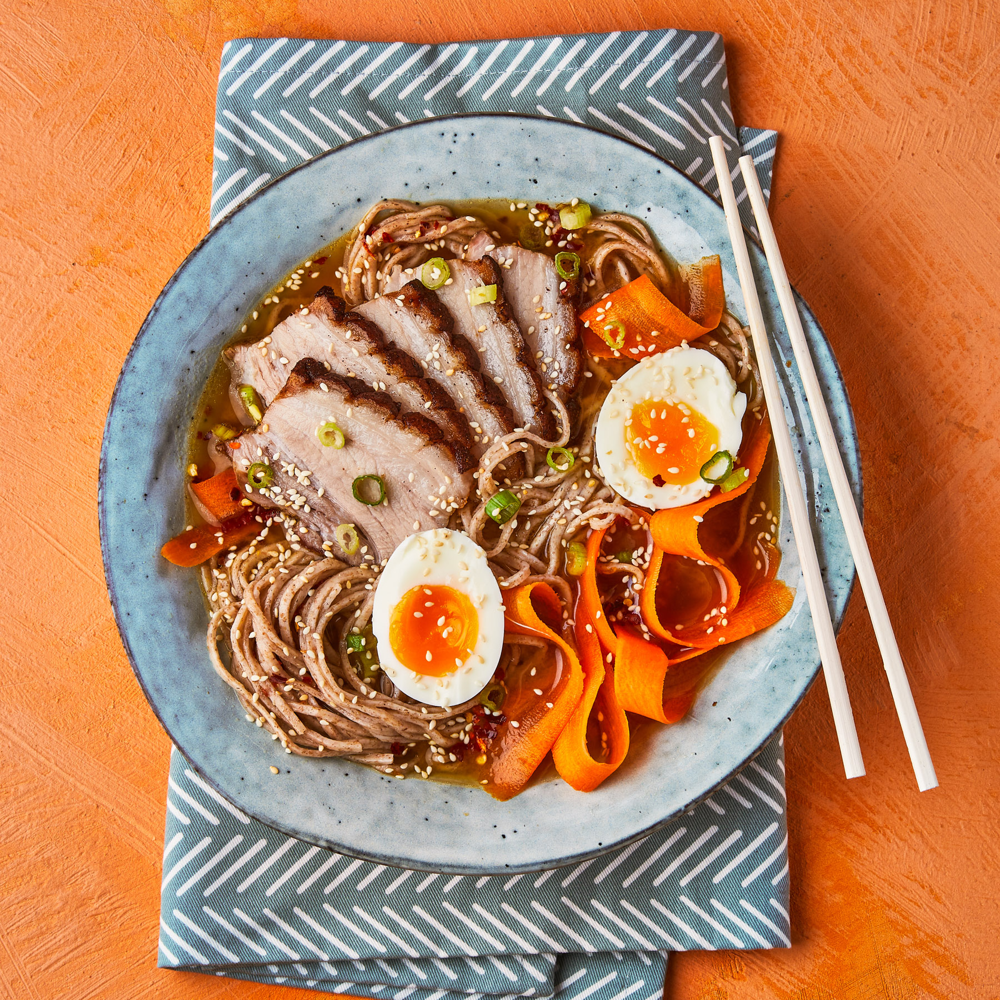

Easy Pork Belly Ramen
Preparation time
Less then 20 minutes.
Cooking time
Less than 10 minutes.

You will need!
- 750g/1lb 10oz ramen noodles (alternatively use udon noodles)
- 2.5 litres/4.5 pints toridashi stock
- 30g/1oz fresh root ginger, cut into 4 thick slices
- 2 garlic cloves, cut into slithers
- 10 fresh shiitake mushrooms, cut into slithers
- 1 carrot, cut into matchsticks
- 100g/3.5oz shimeji mushrooms
- 200g/7oz soya beansprouts (or beansprouts)
- 50g/1.5oz sliced bamboo shoots
- 100g/3.5oz enoki mushrooms
- 200g/7oz choi sum, ends trimmed and cut in half
- 500g/1lb 2oz chashu pork, about 16 slices
- 4 spring onion, cut on the diagonal
- 1 long red chilli, finely sliced on a diagonal
- 4 whlie tomago eggs, halved
Method
- Cook the noodles flilowing the instructions on the packet.
Once cooked, drain and drizzle with a little sesame oil to stop the noodles from sticking.
- Heat the stock in a large pan with the ginger, garlic, shiitake mushrooms and carrots.
- Simmer for 5-8 minutes. Add the shimeji mushrooms.
- Carefully arrange the warm noodles, beansprouts, bamboo shoots, enoki mushrooms, choi sum and sliced pork in four large serving bowls.
- Carefully pour the stock over the pork and vegetables with a ladle. Top with the spring onions and sliced chilli.
- Carefully half the eggs and place on the top of each serving.
- Serve at once with a drizzle of chilli oil, a sprinkling of shichimi togarashi (Japanese seven-spice seasoning) and a flourish of dried tuna flakes (if liked).